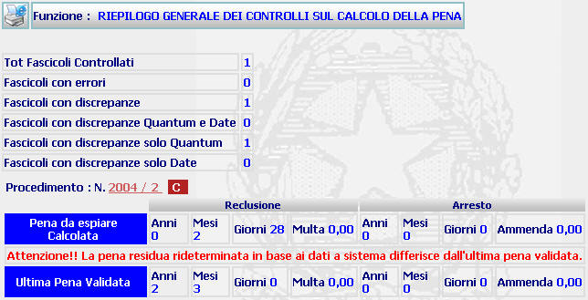
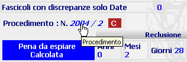

GENERALITA'
RIEPILOGO GENERALE DEI CONTROLLI SUL CALCOLO DELLA PENA: La funzione consente di visualizzare i dati relativi al controllo sul calcolo della pena, effettuato con la funzione Verifica calcolo della pena, e l'eventuale elenco dei procedimenti che contengono gli errori indicati.
LE MASCHERE VIDEO
La funzione in esame viene realizzata attraverso l'utilizzo della seguente maschera che riporta gli elementi descrittivi del controllo sul calcolo della pena effettuato:

COME FARE PER ...
| Per visualizzare il Dettaglio del Fascicolo che contiene l'errore riportato nel riepilogo, l'utente deve: |
Cliccare sul numero di procedimento:

CAMPI
Non sono presenti Campi in questa maschera.
PULSANTI
Oltre ai
pulsanti orizzontali dell'area
di navigazione, è presente
il pulsante
 di stampa del contesto (videata)
di stampa del contesto (videata)